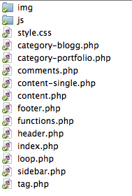

Web Management, 1IK424
Linnéuniversitetet, VT2014
Wordpress part I

WordPress
Vad är WordPress?
- Från början ett "blogging system"
- wordpress.org vs. wordpress.com
- Ett CMS (Content Management System)
- Fritt att använda (GNU General Public License), kräver webbserver, PHP och databasen mySQL
- En kärna (core), flera olika utseenden (teman)
- "Today WordPress powers one of every 6 websites on the Internet,
nearly 60 million in all, with 100,000 more popping up each day"
http://www.forbes.com/sites/jjcolao/2012/09/05/the-internets-mother-tongue/
Varför använda WordPress?
- Fritt att använda
- Enkelhet, flexibilitet
- "It´s more than just a blogging system"
- Teman (och plugin)
- SEO - Search engine optimization
- Många användare, mycket kunskap
Exempel
source: http://wordpress.org/showcase/
https://coursepress.lnu.se/kurs/web-management/
Vårt mål
- Kunna skapa en dynamisk webbplats med hjälp av Wordpress
- Kunna skriva egna teman till Wordpress
- Kunna utnyttja färdiga teman och utöka med egen funktionallitet (child theme)
Resurser
http://codex.wordpress.org/
http://www.smashingmagazine.com/tag/wordpress/

Dagens agenda
- Hur kör vi igång en Wordpress-applikation
- Introducera begrepp, vårt första tema
- Post, Pages, Custom Post Type
- Themes, Widgets, plugins
- Categories, Tags
- Skapa vårt första tema
- Include files, "the loop", template files
Starta med Wordpress
Cloud9 vs. skolans server

Visar hur vi kan installera wordpress
Post vs. Page
- Post - "Att posta en artikel/inlägg" - Förstasidan på kursens webbplats
-
- Page - Mer statiskt innehåll, Mer sällan uppdaterade - Föreläsningssidor
- Custom post type - Möjlighet att skapa egna posttyper, "products", "projects"...
Post - Taxonomy
Genom att gruppera och märka upp poster kan man enklare strukturera, sortera, söka och leda användaren rätt.
Det är också viktigt ur sökmotorsynpunkt.

Category - En post kan tillhöra flera kategorier.
Tag (etiketter) - Ett eller flera nykelord man ger sin post.
Da Dashboard
Administrationsgränssnittet i Wordpress.
Introducerar begreppen via wp-admin
Skapa category, tags, och posta ett antal
inlägg med bilder.
Att "pimpa" wordpress
Möjligheter att skräddasy sin WordPress-applikation
- Themes - Layout, CSS, Hur allt ska se ut och presenteras
- Widgets - Små delar som kan infogas i en sida med specifik funktionalitet - Kalender, "senaste kommentarerna"...
- Plugins - Ren PHP-programmering som utökar WordPress grundläggande funktionallitet
Hämtat från: http://openclipart.org/detail/21885/comic-characters:-painter-by-nicubunu
Exempel - Teman
Byter utseende på din WordPress-applikation.
Finns massor av färdiga "themes".
HTML, CSS och PHP
http://wordpress.org/extend/themes/
Exempel - Widgets

https://codex.wordpress.org/WordPress_Widgets
Exempel - Plugin
Möjlighet att utöka funktionallitet i Wordpress. Mer avancerade php-filer.
http://wordpress.org/extend/plugins/
Bild tagen från: http://wordpress.org/extend/plugins/
Att byta ett tema och aktivera ett plugin
Välj ett Tema och visa att det inte går att ladda ner
via wordpress.
Att tänka på...
Problem med för mycket plug-in, widgets
och "knasiga" teman
- Prestanda - Dåligt kodade teman/plugin
- Problem, buggar - Dåligt kodade teman/plugin
- Fungerar inte alltid med nyare/kommande versioner av WordPress - Versionskonflikt
- Kan ge problem då vissa plugins behöver "skrivrättigheter" på webbservern

Skapa ett eget tema
Filstruktur - Tema
index.php och style.css är obligatoriska
Rör inga andra filer än ditt eget temas filer!
Vad ingår i ett tema?
- style.css:
Definierar utseendet på temat. Innehåller en deklaration för temat
- Template files:
En eller flera php-filer som visar innehållet (HTML och PHP). Måste alltid finnas en index.php
- functions.php:
När du behöver skriva mer php-kod för att utöka funktionaliteten. Skapa menyer och "widget areas"
- Andra filer:
JavaScript, bilder o.s.v.

The stylesheet - style.css
Alla teman ska ha en stilmall, style.css
Theme declaration:
Alla teman ska ha en deklation i sin style.css där metainformation om temat ska ingå:
/*
Theme Name: My great theme
The URI: http://www.whereyoucanfind.com/mytheme
Description: Här följer en beskrivning av mitt tema som andra kan läsa
Author: John H
Version: 1.0
Tags: blue two-column responsive
*/
body {background-color: blue; }
Template files - Template tags
- För att visa innehåll i wordpress använder man template files.
- Egentligen behövs bara index.php
-
Då vi inte vill hårdkoda värden i vårt tema kan vi använda
sk. template tags för att läsa ut dynamisk data.
Vårt första tema!
Någonstans måste vi ju layout och innehåll (HTML och PHP)
Vi börjar med att skapa index.php och göra vår layout där.
Skapa en sida som skriver ut bloggens titel, bygg på sidan med en header,
en layout.
Hitta sida med layout som jag tagit from HTML Dog
Få in stylesheet och bilder
Att dela upp din sida i delar
Ska all kod ligga i index.php?
Att bryta ut koden
Istället för en index.php delar vi upp kod i flera olika filer
Men all data då?
Vart hamnar våra postade inlägg?
Hur visar jag upp all information i mitt tema?


"The Loop"
Det som drar data ur databasen kallas "The Loop". Vare sig det handlar om
ett antal poster (while) eller en enskild Post.
http://codex.wordpress.org/The_Loop
<?php while ( have_posts() ) : the_post(); ?>
<h1><?php the_title(); ?></h1>
<?php endwhile; ?>
Template tags
- "Template tags" är nycklen till hur vi hämtar dynamiskt innehåll när vi befinner oss i "the loop".
- Det finns flertalet tillgängliga i Wordpress, uppdelade på olika kategorier.
- http://codex.wordpress.org/Template_Tags
Några vanliga Post template tags
- the_title()
- the_permalink()
- the_content()
- the_ID()
- post_class()
Att få ut lite innehåll
Vi fyller på vår layout med att skriva ut blogginnehållet.
 Detta verk är licensierat under en
Creative Commons Erkännande-IckeKommersiell-DelaLika 3.0 Unported Licens.
Detta verk är licensierat under en
Creative Commons Erkännande-IckeKommersiell-DelaLika 3.0 Unported Licens.